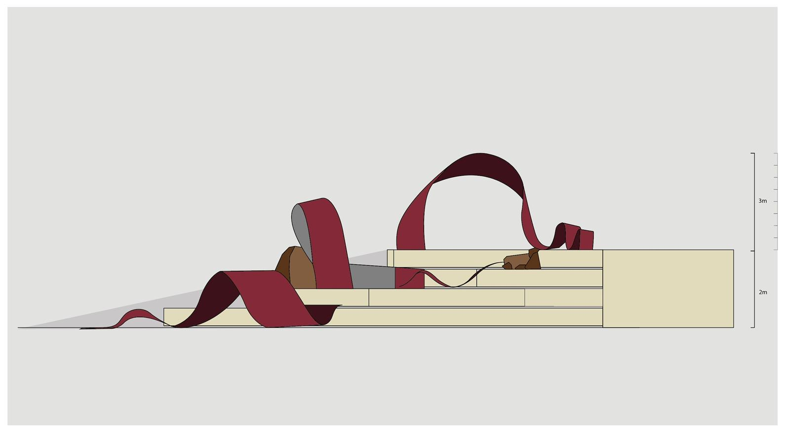
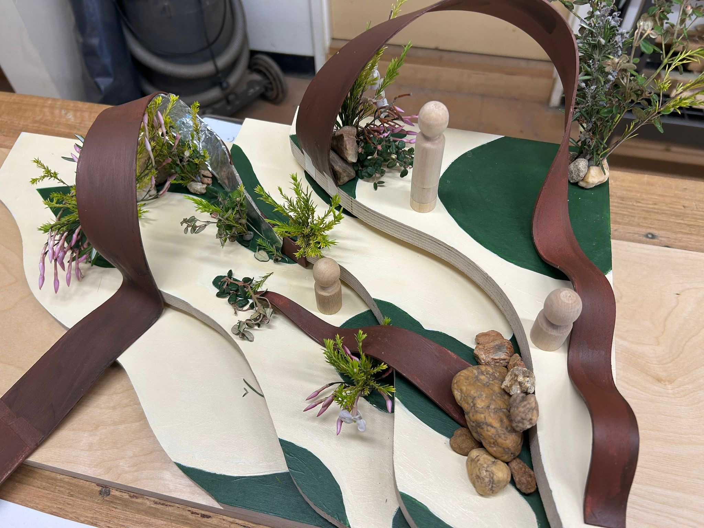

Public Project.
Semester 2, 2025.
For The Public Project: Engaging with Institutions and Communities, our brief came from Canberra's City Renewal Authority (CRA). The CRA was midway through revitalizing the southern section of City Walk to better reflect the needs of a modern, active, and innovative public domain; one that encourages pedestrian connectivity, night-time activation, and a vibrant interface between public space and surrounding commercial, residential, and hospitality uses.
We were tasked with developing a public art installation to transform the movement corridor of city walk into a place of playful engagement. Our design resolution was a corten steel structure reflecting the natural waterways that move through Ngunnawall and Ngambri country, that could be interacted with by all. Our design was well received, and has been taken on board by CRA and is currently in the early stages of official design and construction planning.
Developed in collaboration with James Neal, Tanya Da Silva and Kaede Jenkinson.

